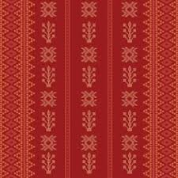
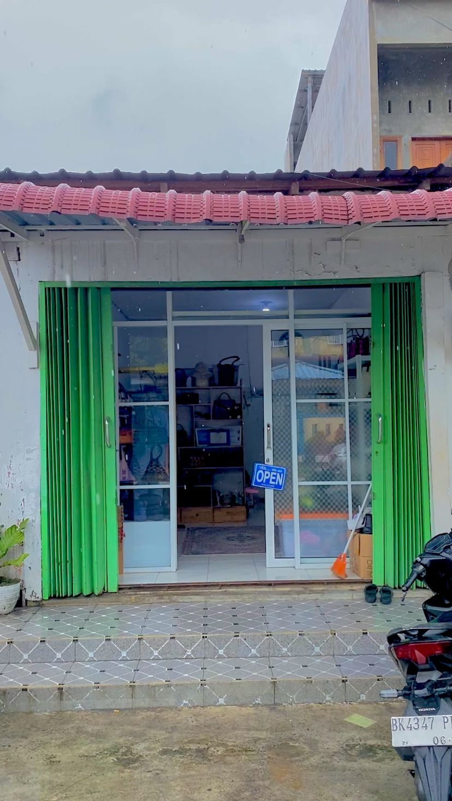

Ulos merupakan kain tenun tradisional yang berasal dari Suku Batak di Sumatera Utara yang memiliki nilai sejarah dan filosofi yang sangat dalam. Secara etimologis, kata “ulos” berarti kain yang digunakan untuk menyelimuti atau menghangatkan tubuh. Pada masa awal, ulos berfungsi sebagai pelindung dari suhu dingin di wilayah dataran tinggi sekitar Danau Toba. Dalam kehidupan masyarakat Batak dahulu, dikenal tiga sumber utama kehangatan, yaitu matahari, api, dan ulos. Namun karena matahari tidak selalu bersinar dan api tidak selalu tersedia, ulos menjadi sumber kehangatan yang paling dekat dengan manusia. Dari sinilah ulos berkembang dari sekadar kebutuhan fisik menjadi simbol yang sarat makna dalam kehidupan sosial dan spiritual.
Seiring perkembangan zaman, fungsi ulos meluas dan menjadi bagian penting dalam sistem adat Batak yang dikenal sebagai Dalihan Na Tolu, yaitu struktur kekerabatan yang mengatur hubungan antara hula-hula, dongan tubu, dan boru. Dalam setiap tahap kehidupan, ulos selalu hadir sebagai simbol yang mengikat hubungan tersebut. Pada peristiwa kelahiran, ulos diberikan sebagai doa agar bayi tumbuh sehat dan panjang umur. Dalam pernikahan, ulos menjadi lambang restu dan harapan akan kehidupan rumah tangga yang harmonis. Sementara dalam upacara kematian, ulos digunakan sebagai bentuk penghormatan terakhir sekaligus simbol perpisahan. Dengan demikian, ulos tidak hanya menjadi benda, tetapi juga media komunikasi nilai-nilai adat yang diwariskan secara turun-temurun.
Filosofi utama ulos terletak pada makna kehangatan, kasih sayang, dan perlindungan. Ulos tidak hanya menghangatkan tubuh secara fisik, tetapi juga melambangkan kehangatan batin berupa cinta, perhatian, dan dukungan dari keluarga maupun komunitas. Hal ini terlihat jelas dalam tradisi “mangulosi”, yaitu pemberian ulos kepada seseorang sebagai tanda berkat dan restu. Dalam praktiknya, mangulosi tidak dilakukan secara sembarangan, melainkan mengikuti aturan adat yang ketat, di mana pemberian ulos umumnya dilakukan oleh pihak yang memiliki kedudukan lebih tinggi kepada yang lebih rendah. Proses ini menegaskan bahwa ulos juga berfungsi sebagai simbol penghormatan dan keteraturan sosial dalam masyarakat Batak.
Selain itu, setiap jenis ulos memiliki makna filosofis yang berbeda, tergantung pada motif, warna, dan penggunaannya. Misalnya, Ulos Ragidup melambangkan kehidupan yang sejahtera dan kebahagiaan, Ulos Sibolang sering digunakan dalam suasana duka dan mencerminkan keteguhan hati, sementara Ulos Mangiring mengandung harapan akan kelangsungan keturunan. Motif seperti Bintang Maratur menggambarkan keteraturan dan keharmonisan dalam kehidupan keluarga. Warna-warna yang digunakan dalam ulos juga memiliki arti tersendiri, seperti merah yang melambangkan keberanian dan kekuatan, hitam yang mencerminkan kewibawaan dan keteguhan, serta putih yang melambangkan kesucian dan kejujuran.
Lebih dari itu, ulos juga memiliki nilai spiritual yang kuat. Dalam kepercayaan tradisional masyarakat Batak, ulos dipercaya mengandung doa dan energi positif dari pembuat serta pemberinya. Oleh karena itu, ulos sering dianggap sebagai simbol perlindungan dan berkat dalam kehidupan. Hingga saat ini, meskipun ulos telah berkembang menjadi bagian dari industri kreatif seperti fashion dan produk modern lainnya, nilai-nilai filosofis yang terkandung di dalamnya tetap menjadi inti yang tidak terpisahkan. Ulos bukan sekadar kain, melainkan representasi identitas budaya, media penyampai kasih, serta warisan leluhur yang terus hidup dan relevan di tengah perubahan zaman.

Pengrajin Ulos Batak
JABUTAS merupakan brand tas lokal Indonesia yang berfokus pada pengembangan produk berbasis kain-kain tradisional nusantara. Nama JABUTAS ini merupakan hasil rebranding dari Sabina Collection yang telah berdiri sejak 2018 dengan membawa visi menjadi brand tas lokal yang melestarikan kain tradisional agar melestarikan budaya indonesia. Melalui JABUTAS, kami mengajak masyarakat Indonesia untuk kembali mencintai dan menggunakan kain tradisional dalam kehidupan sehari-hari dengan cara yang lebih modern, stylish, dan berkelas.
Setiap produk Jabutas dibuat dengan penuh ketelitian oleh pengrajin lokal yang memahami keindahan dan makna di balik setiap helai ulos. Kami percaya bahwa tas bukan hanya aksesoris, tetapi juga medium untuk bercerita tentang budaya dan identitas bangsa.

TOKO Jabutas by Sabina Collection
Menjadikan Jabutas sebagai brand tas etnik modern yang mampu mengangkat nilai budaya Indonesia, khususnya kain Ulos, ke dalam gaya hidup generasi masa kini. Jabutas hadir bukan hanya sebagai produk fashion, tetapi juga sebagai simbol kebanggaan terhadap warisan budaya lokal yang dikemas secara modern, elegan, dan relevan dengan perkembangan tren.
"Tasnya cantik! Ulos asli, jahitan rapi."
"Packaging aman, cepat. Motif etnik tapi elegan."
"Bahan tebal berkualitas. Langganan oleh-oleh Medan."
"Suka banget sama detail tenunnya."
"Pelayanan ramah, pengiriman cepat."
"Warna sesuai gambar, cocok untuk acara adat."
"Tas ulos pertama saya, jatuh cinta!"
"Modelnya unik, nggak pasaran."
"Bagus, hanya pengiriman agak lama."
"Keren! Support UMKM lokal."